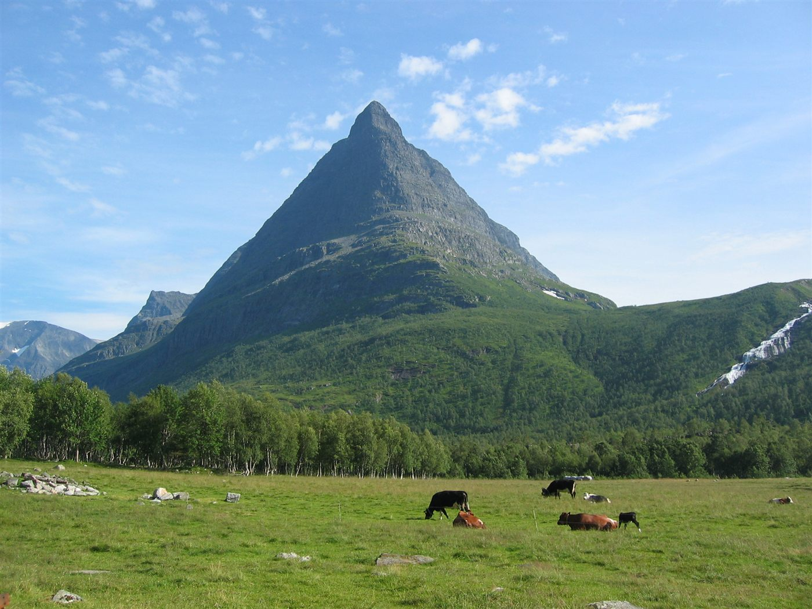
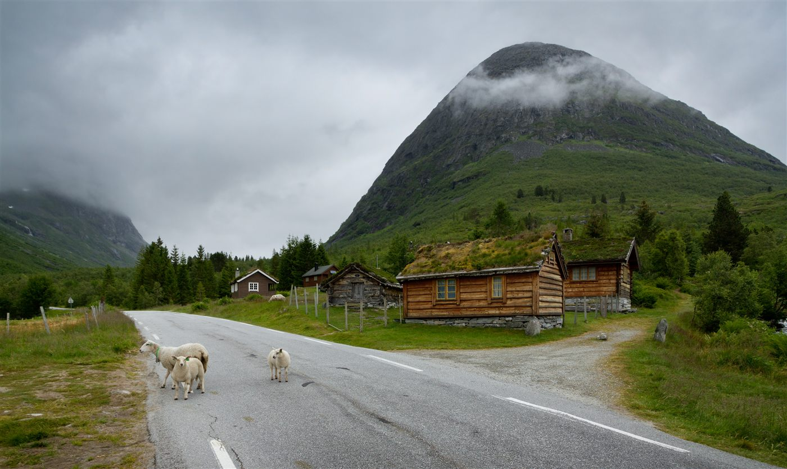
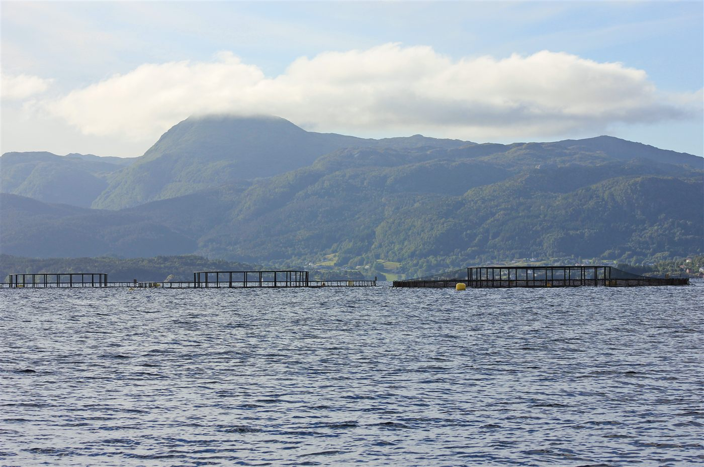

Ku, melk og Bovaer
Vi følger særlig saker om fôrtilsetninger i meierikjeden, merking og forbrukerinformasjon om melk og storfe.
Tema: Bovaer i meierikjedenFoto: color line (CC BY 2.0, Wikimedia Commons)
Skann mat, velg bevisst
Mat Sjekk kombinerer to behov: finn bondens butikker for kortere matkjede, og skann produkter for trafikklys på Bovaer, GMO/NGT og insektsmel.
Målet er mer åpenhet om dyrevelferd, fôrvalg og leverandørkjeder, slik at du kan velge med bedre innsikt.
🗺️ Over 41 000 gårdsbutikker, agriturismi og lokalmarkeder kartlagt i Europa — foreløpig register, oppdateres løpende.
🛒 Finn InnvandrerbutikkerJa, QR er lurt pa nettsiden: mobilbrukere kommer direkte til riktig butikkside uten ekstra klikk.
Kortere verdikjede kan gi bedre innsyn i produksjon, dyrevelferd og råvarekvalitet.
Direkte handel fra gård og lokale produsenter gjør det enklere å vite hvor maten kommer fra og hvordan den er produsert.
Flere forbrukere ønsker aktive valg for bedre dyrevelferd. Derfor løfter vi fram gårds- og lokalbutikker som alternativ.
Når du handler i vanlig butikk, bruker du skanneren i appen for å se regelstatus, forbrukerrisiko og mulig kjederisiko.
Appen er hovedproduktet for risikovarsler. Nettsiden støtter med butikksøk, metode og åpen dokumentasjon.
Dette er grunnen til at appen viser både regelstatus og forbrukerrisiko, ikke bare ja/nei.
I noen GMO/NGT-løp kan informasjonen være mindre synlig for forbruker enn tidligere. Derfor får du et eget trafikklys for regelstatus i appen.
Det kan fortsatt finnes sporbarhets- og dokumentasjonskrav i upstream-ledd (for eksempel frøkjede/produksjon), selv om etiketten i butikk ikke alltid sier alt.
Importør, leverandør og produsentnettverk betyr mer når direkte produktmerking er svak. Mat Sjekk flagger dette som gul risiko der det er relevant.
Se detaljer under EU-vedtak.
Mat Sjekk varsler om risikosignaler knyttet til Bovaer, GMO i fôrkjeder og insektsmel. Under er temaene som vurderes i dagens app.

Vi følger særlig saker om fôrtilsetninger i meierikjeden, merking og forbrukerinformasjon om melk og storfe.
Tema: Bovaer i meierikjedenFoto: color line (CC BY 2.0, Wikimedia Commons)

Vi utvider dekningen til småfe og geit, med fokus på råvarer, fôrsporbarhet og åpen dokumentasjon i verdikjeden.
Tema: småfe + geitFoto: Ximonic (Simo Räsänen) (CC BY-SA 3.0, Wikimedia Commons)

Appen vurderer risiko i fiskefôrkjeder, inkludert GMO-signaler og mulig indirekte eksponering via leverandørledd.
Tema: GMO + insektsmelFoto: Kora27 (CC BY-SA 4.0, Wikimedia Commons)
Funksjonene under er i Mat Sjekk-appen (iOS/Android). Nettsiden brukes primært for butikksøk, metode og kildedokumentasjon.
Skann produkter direkte i butikken med mobilkameraet ditt
Umiddelbar informasjon om produkter fra produsenter som bruker Bovaer
Sjekk om oppdrettslaks inneholder GMO-fiskefôr
Varsler om produkter med insektinnhold
Lag og administrer flere handlelister samtidig
Støtte for norsk, engelsk, svensk, dansk, finsk, tysk, nederlandsk, fransk, italiensk, portugisisk, spansk, koreansk, polsk, russisk, kinesisk, arabisk og thai
Mat Sjekk er utviklet for bevisste forbrukere som ønsker full kontroll over hva de kjøper. Appen bruker data fra OpenFoodFacts og andre åpne kilder for å gi deg ærlig informasjon om matvarene dine.
Vi tar ikke stilling til om Bovaer, GMO eller insektmel er bra eller dårlig - vi gir deg bare informasjonen du trenger for å ta dine egne valg.
Les mer om hvordan kvalitetskontroll gjøres i redaksjonell metode og kildekriterier.
Ja, Mat Sjekk er helt gratis å laste ned og bruke. Vi finansieres gjennom annonser.
Vi bruker primært OpenFoodFacts, en åpen database med produktinformasjon. For enkelte land bruker vi også nasjonale matvarebaser som Matvaretabellen (Norge) og Fineli (Finland).
Vi baserer oss på offentlig tilgjengelig informasjon om hvilke produsenter som bruker Bovaer, GMO-fiskefôr eller insektmel. Produktdatabasen oppdateres kontinuerlig.
Appen fungerer i hele verden, men vi har spesialdata for Norge, Sverige, Danmark, Finland, Tyskland, Nederland, Frankrike, Italia, Portugal, Spania og Storbritannia.
Nei. Alt lagres lokalt på din telefon. Vi samler ikke inn eller deler persondata.
Har du spørsmål, tilbakemeldinger eller forslag?